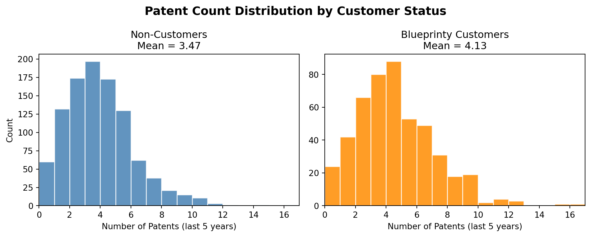
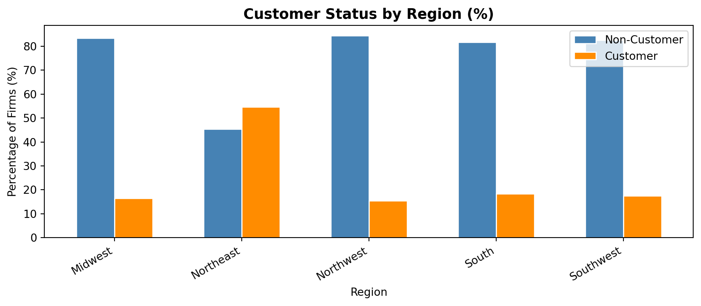
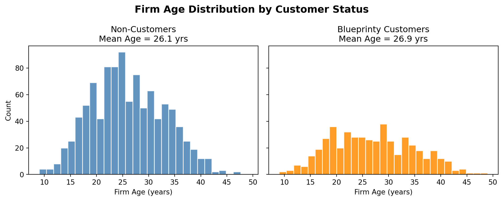
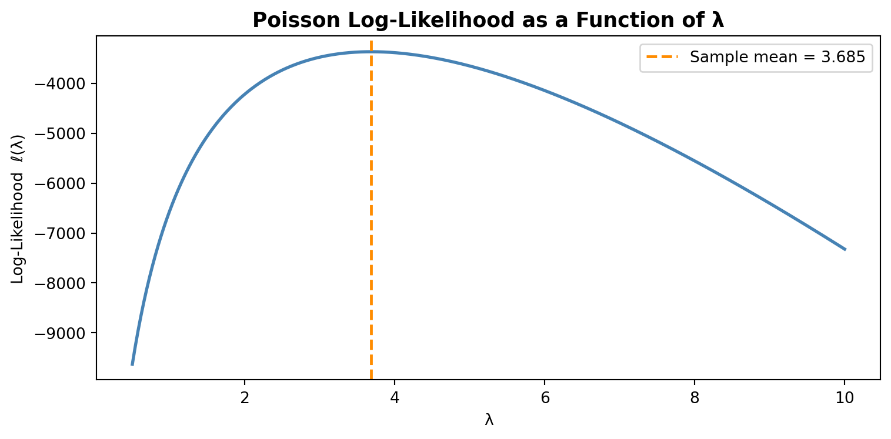
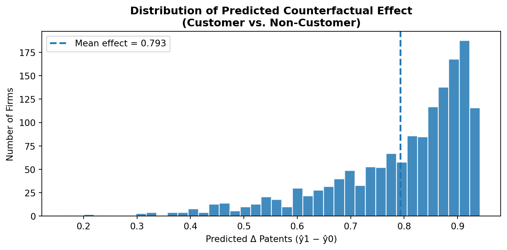

| patents | region | age | iscustomer | |
|---|---|---|---|---|
| 0 | 0 | Midwest | 32.5 | 0 |
| 1 | 3 | Southwest | 37.5 | 0 |
| 2 | 4 | Northwest | 27.0 | 1 |
| 3 | 3 | Northeast | 24.5 | 0 |
| 4 | 3 | Southwest | 37.0 | 0 |
Poisson Regression and Maximum Likelihood Estimation
A Case Study of Blueprinty’s Software and Patent Awards
Introduction
Blueprinty is a small software company that helps engineering firms prepare blueprint documentation for patent applications submitted to the US Patent Office. Their marketing team believes that firms using Blueprinty’s software are more likely to have their patent applications approved — and they want to use data to back that claim.
To test this, Blueprinty collected data on 1,500 mature (non-startup) engineering firms. For each firm, the dataset records the number of patents awarded over the last five years, the firm’s geographic region, its age since incorporation, and whether or not it is a Blueprinty customer.
However, evaluating the marketing claim is not as simple as comparing average patent counts between customers and non-customers. Blueprinty’s customers are not randomly selected: firms that choose to adopt the software may already differ in important ways — perhaps they are older, better-resourced, or concentrated in regions with stronger patent cultures. Any raw difference in patent counts could therefore reflect those underlying firm characteristics rather than the software itself. To make a credible causal argument, we need to account for these confounders, which motivates the regression analysis that follows.
Exploring the Data
Patent Counts by Customer Status

Mean patents — Non-customers: 3.473
Mean patents — Customers: 4.133Blueprinty customers average about 4.13 patents over five years, compared to 3.47 for non-customers — a meaningful raw difference. Both distributions are right-skewed, with most firms holding fewer than 6 patents, but customers have a heavier right tail. That said, this comparison does not control for firm age or region, so we cannot yet attribute the gap to the software.
Regional Distribution by Customer Status

Customer adoption rates vary noticeably across regions. The Northeast has a disproportionately high share of Blueprinty customers, while the South has relatively few. Because regions may differ in local patent culture, industry mix, or access to legal resources, failing to control for region could bias our estimate of the software’s effect.
Firm Age by Customer Status

Blueprinty customers tend to be slightly younger on average than non-customers. Since older firms have had more time to accumulate patents, failing to control for age could actually understate the software’s benefit. This reinforces the need for a regression model.
A Simple Poisson Model via Maximum Likelihood
Patent counts are non-negative integers — exactly the kind of outcome the Poisson distribution is built for. Unlike the Normal distribution, which is continuous and can take negative values, the Poisson distribution assigns probability only to the non-negative integers {0, 1, 2, …}. We therefore model each firm’s patent count \(Y_i\) as a Poisson draw with rate \(\lambda\).
Likelihood and Log-Likelihood
Given \(n\) independent observations each drawn from \(\text{Poisson}(\lambda)\), the joint likelihood is:
\[ L(\lambda \mid Y_1, \ldots, Y_n) = \prod_{i=1}^{n} \frac{e^{-\lambda} \lambda^{Y_i}}{Y_i!} \]
Taking the natural log converts the product into a sum — far easier to work with:
\[ \ell(\lambda) = \log L(\lambda) = \sum_{i=1}^{n} \left( -\lambda + Y_i \log \lambda - \log Y_i! \right) = -n\lambda + \log\lambda \sum_{i=1}^{n} Y_i - \sum_{i=1}^{n} \log Y_i! \]
Analytic MLE. Setting the derivative to zero:
\[ \frac{d\ell}{d\lambda} = -n + \frac{\sum Y_i}{\lambda} = 0 \implies \hat{\lambda}_{\text{MLE}} = \bar{Y} \]
This makes intuitive sense: the MLE for \(\lambda\) is simply the sample mean, matching the fact that \(E[Y] = \lambda\) for a Poisson distribution.
Coding the Log-Likelihood
from scipy.special import gammaln # log(Y!) = gammaln(Y+1), numerically stable
def poisson_loglikelihood(lam, Y):
"""Log-likelihood for iid Poisson(lam) data."""
if lam <= 0:
return -np.inf
return np.sum(-lam + Y * np.log(lam) - gammaln(Y + 1))
Y = df['patents'].valuesPlotting the Log-Likelihood

The curve is concave and unimodal: it rises steeply from small values of \(\lambda\), peaks, then declines. The peak — the MLE — sits exactly at the sample mean (orange dashed line), confirming our analytic result.
Numerical MLE with scipy.optimize
Numerical MLE: λ̂ = 3.68467
Sample mean: Ȳ = 3.68467The numerical optimizer and the sample mean agree to five decimal places, as expected from our analytic derivation. The optimizer minimizes the negative log-likelihood (equivalent to maximizing the log-likelihood), and the result perfectly matches \(\bar{Y}\).
Poisson Regression
The simple model above assumes every firm shares the same rate \(\lambda\). A more realistic model lets \(\lambda\) vary across firms as a function of firm characteristics:
\[ Y_i \sim \text{Poisson}(\lambda_i), \qquad \lambda_i = \exp(X_i'\beta) \]
We use the exponential link for a critical reason: \(X_i'\beta\) is a linear combination of covariates and can take any real value, but \(\lambda_i\) must be strictly positive. The exponential function maps \(\mathbb{R} \to (0, \infty)\), guaranteeing valid Poisson rates.
Log-Likelihood for Poisson Regression
def poisson_regression_loglikelihood(beta, Y, X):
"""Log-likelihood for Poisson regression: lambda_i = exp(X_i @ beta)."""
lam = np.exp(X @ beta)
return np.sum(-lam + Y * np.log(lam) - gammaln(Y + 1))Building the Design Matrix \(X\)
# One-hot encode region, drop 'Midwest' as the reference category
X = pd.get_dummies(df, columns=['region'], drop_first=False)
region_cols = [c for c in X.columns if c.startswith('region_')]
reference = 'region_Midwest' # drop one to avoid perfect collinearity
region_cols_use = [c for c in region_cols if c != reference]
X["age_sq"] = X["age"] ** 2
feature_cols = ["age", "age_sq"] + region_cols_use + ["iscustomer"]
X_mat = X[feature_cols].copy()
X_mat.insert(0, 'intercept', 1.0)
X_np = X_mat.values.astype(float)
Y_np = df['patents'].values.astype(float)
print("Design matrix columns:", X_mat.columns.tolist())
print("Shape:", X_np.shape)Design matrix columns: ['intercept', 'age', 'age_sq', 'region_Northeast', 'region_Northwest', 'region_South', 'region_Southwest', 'iscustomer']
Shape: (1500, 8)We include age squared to capture the likely non-linear relationship between firm maturity and patenting activity — very young and very old firms may behave differently from those in the middle of their lifecycle. We drop Midwest as the reference region to avoid perfect collinearity: with an intercept in the model, including indicator variables for all regions would make the columns linearly dependent.
Verification with statsmodels
MLE via scipy.optimize + Hessian-Based Standard Errors
The hand-coded optimizer is sensitive to scaling because age squared is numerically large. For the final estimates, I rely on the GLM fit from `statsmodels`, which implements Poisson regression more robustly.
Formatted Results Table
| Estimate | Std. Error | z-value | p-value | |
|---|---|---|---|---|
| intercept | -0.5089 | 0.1832 | -2.7783 | 0.0055 |
| age | 0.1486 | 0.0139 | 10.7162 | 0.0000 |
| age_sq | -0.0030 | 0.0003 | -11.5132 | 0.0000 |
| region_Northeast | 0.0292 | 0.0436 | 0.6686 | 0.5037 |
| region_Northwest | -0.0176 | 0.0538 | -0.3268 | 0.7438 |
| region_South | 0.0566 | 0.0527 | 1.0740 | 0.2828 |
| region_Southwest | 0.0506 | 0.0472 | 1.0716 | 0.2839 |
| iscustomer | 0.2076 | 0.0309 | 6.7192 | 0.0000 |
Interpretation:
- Intercept: the baseline log-rate for a Midwest firm of age zero (extrapolated).
- Age and age squared: patenting rises with firm age at first, but the negative squared term suggests the relationship eventually flattens or turns downward.
- Region indicators: After controlling for age and customer status, the regional differences are small and not statistically significant.
iscustomer: the coefficient is positive and statistically significant. Holding age and region constant, Blueprinty customers have a higher expected patent rate. We interpret this in detail in the next section.
The Effect of Blueprinty’s Software
Because Poisson regression is multiplicative (effects enter through \(\exp\)), the iscustomer coefficient does not directly tell us “how many more patents a customer gets.” To get an interpretable estimate, we use the counterfactual prediction approach.
Average Treatment Effect: 0.7928 additional patents over 5 years
Holding each firm’s age and region fixed at their observed values, switching every firm from non-customer to customer status is predicted to increase patent awards by an average of roughly 0.79 patents over five years.
Most predicted effects are concentrated between roughly 0.7 and 0.9 additional patents, suggesting that the estimated software benefit is fairly consistent across firms.
What the analysis does — and does not — establish
This estimate is consistent with Blueprinty’s marketing claim that their software helps firms secure more patents. However, this is an observational study, not a randomized controlled trial. Even after controlling for age and region, firms that adopt Blueprinty’s software may differ from non-adopters in unobserved ways — for example, they may have stronger internal R&D teams or more dedicated legal support. These unobserved factors could partly or fully explain the higher patent counts. The estimated effect should therefore be interpreted as suggestive evidence, not a causal estimate.